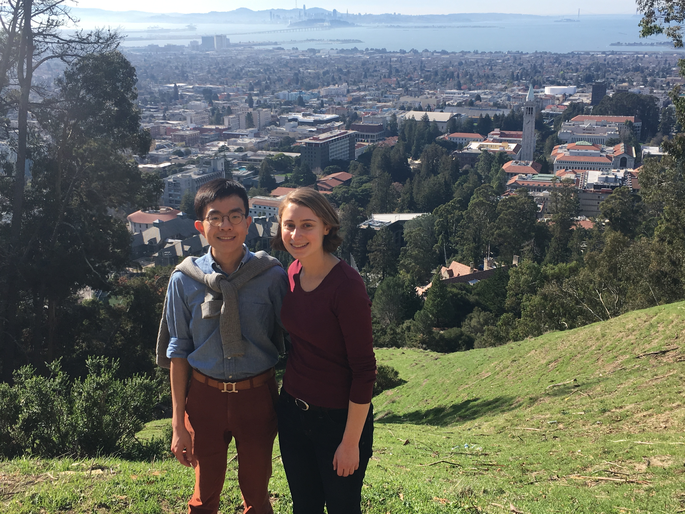

Your Guide to Some of Our Favorite Places!
We've put together a list of our favorite local spots for you to explore! Check out our recommendations on Google Maps.
Note: Unfortunately, theft is common in Berkeley. If you are renting a car, please take all belongings (valuable or otherwise) with you at all times and avoid leaving anything in your car.
UC Berkeley Campus and Downtown Berkeley
Start with coffee from Signal or Sasha’s, then check out the latest exhibits at the Berkeley Art Museum (BAMPFA). Walk through campus to the Campanile and take in the views from the top. For more views, hike up to the Big C. Grab some street tacos or burritos from Tacos Sinaloa on Telegraph Ave, and browse books at Moe’s or records at Amoeba. Head back downtown and get boba at Asha, and maybe pick up a tin of matcha or some loose-leaf tea to bring home.
For dinner, consider Comal (Michelin-recommended Mexican), Imm Thai (fast and delicious), or Tsuruya Ramen (we love the vegetarian ramen!). Catch some live music at Jupiter, The Back Room, or Freight and Salvage, and finish your night with frozen custard from Lexie’s or gelato from Caravaggio.
View of UC Berkeley’s campus from the Big C in 2018
North Berkeley Food and Parks
Start by grabbing pastries from Cheeseboard and having a picnic in Live Oak Park. Wander through the Berkeley hills up to the Rose Garden. Cross the street to Cordonices Park and check out the concrete slide (for kids) or the poem staircase (for everyone). Head back down to Shattuck and have lunch at Saul’s Deli. For a truly unique Berkeley experience, stop by the Aftel Archive of Curious Scents to learn about perfumes (Saturday only, recommend reserving in advance), then get a glass or a bottle at Vintage Wine Shop and enjoy it on their patio.
For dinner, Chez Panisse is world-famous for farm-to-table dining (reserve in advance). Alternatively, drive uphill to Kensington for pizza at Benchmark, then watch the sunset at Indian Rock.

Enjoying the Berkeley Rose Garden on Satcher’s birthday in 2021
Quirky West Berkeley
Start at CoRo for unique coffee, then try rice and pickles from The Cultured Pickle Shop across the street (weekends only). For dessert, try mochi muffins and donuts at Third Culture Bakery. Alternatively, get pizza and pastries from Acme Bread, poke bowls from Tokyo Fish Market, or browse the extensive produce selection at Berkeley Bowl West. Bring your goodies to Cesar Chavez Park at the Berkeley Marina for a picnic. At the marina, check out the Adventure Playground (for kids) or rent a kite to fly (for everyone). Do some shopping on Fourth Street, then check out Donkey and Goat for natural wine or Fieldwork for beer. For dinner, try Funky Elephant Thai food, or head to Emeryville for sushi at Mujiri or Taiwanese street food at Good to Eat.
Food and Drinks Near Aiden Hotel
Jaffa Coffee, Bageltopia, Lavender Bakery, Pyeong Chang Tofu House (Samin Nosrat recommended), Sushi California.
For Kids
- Adventure Playground at the Berkeley Marina (weekend only, fill out waiver in advance)
- Tilden Park: Little Farm petting zoo, merry-go-round, and steam train
- Playground and slide at Cordonices Park
- Totland (for toddlers)
- Lawrence Hall of Science
Additional Recommendations
- Tilden Park: Inspiration Point and other walking trails
- North Oakland: Excellent bagels on the back patio at Poppy and explore the shops in Temescal Alley
- Spend a day in Sausalito for seafood (we love Fish. Restaurant) and Golden Gate views at Hawk Hill
- Check out the redwoods: nearby at Reinhardt Redwood Regional Park in Oakland, or farther away at Muir Woods (1-hour drive, reserve parking in advance)
- In San Francisco:
- Golden Gate Park
- SFMOMA
- Mission District (burritos, ice cream at Bi-Rite, Dolores Park, Tartine Bakery, shopping on Valencia St.)
- Classic tourist experience: Ferry Building, Pier 39, Coit Tower, Chinatown
- Golden Gate views in the Presidio and brand-new Tunnel Tops Park